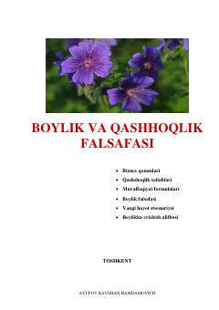

BVBoylikka erishish va muvaffaqiyat sirlari haqidagi amaliy qo'llanma.
Ushbu kitobda boylikka erishishning fundamental qonuniyatlari, qashshoqlik sabablari va muvaffaqiyat sirlari haqida fikr yuritiladi. Mualliflar o'quvchilarga o'z vatanida moddiy mustaqillikka erishish, tadbirkorlik ko'nikmalarini oshirish hamda ijobiy fikrlashni shakllantirish bo'yicha amaliy maslahatlar beradilar.